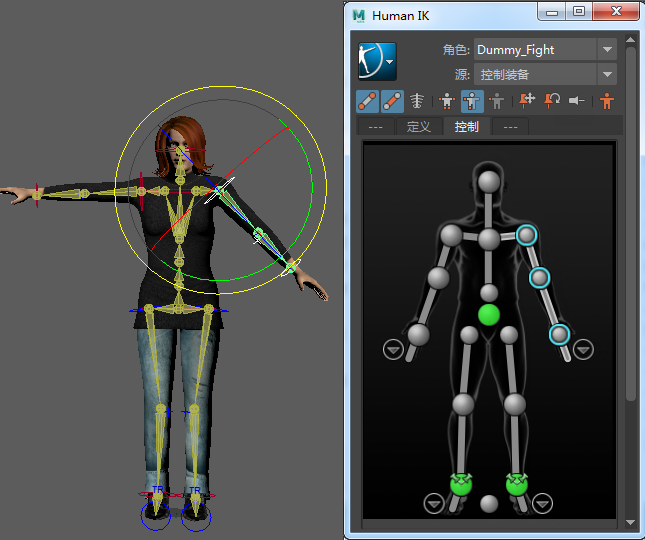

在“时间编辑器”(Time Editor)中使用 HumanIK 角色装备时，需要注意一些特殊事项。这是因为 HumanIK 装备具有“全身”(Full Body)和“身体部位”(Body Part)等特殊的设置关键帧模式，可以控制 HumanIK 控制器的不同组合。由于这些模式特定于 HumanIK，因此还必须确保已选择适当的控制器。
在时间编辑器中使用 HIK 装备和层片段时，必须将与正在设置关键帧的身体部位相关的所有控制器包含在层片段中，然后同时为其设置关键帧。例如，若要为肩部控制器的旋转属性设置关键帧，您需要选择肩部控制器的所有子对象。否则，设置关键帧的操作仅会影响选定控制器，看起来像所有对象均未设置动画一样。
下图显示了在时间编辑器中为 HIK 角色装备创建肩部旋转的适当方法：

如果要从 HumanIK 角色装备创建姿势片段，请务必包括要为其创建姿势片段的控制器的所有子控制器。例如，若要为肩部控制器创建姿势片段，必须选择肩部的所有子对象。如果只在肩部上设置旋转，则肩部将旋转，但是不会自动包括与其链接的控制器，使效果呈静态（即使控制器的旋转值显示在通道盒(Channel Box)中），这是因为所有子控制器均不包含在动画中。
时间编辑器中的层片段受 HumanIK 的特殊设置关键帧模式影响。因此，必须将所有必需的属性添加到时间编辑器动画层中。如果在“大纲视图”(Outliner)中将其全部选定，则可执行该操作。
将覆盖层添加到 HIK 装备时，时间编辑器会为选定对象的当前属性值创建快照。此操作会根据当前视口值创建静态关键帧，其效果是固定装备。（而另一方面，相加层会将选定对象的默认值设置为 0，从而防止在创建层后发生更改。）
请注意，仅使用您希望覆盖层驱动的属性，否则可能会无意中固定装备上的对象。只要选择角色装备的一部分创建覆盖层，就会根据当前姿势创建新动画；无意中选择的包括在该层内的任何节点将固定显示在当前帧。
为 HumanIK 装备创建时间编辑器动画层
HIK 特殊设置关键帧模式的存在也会影响设置 HumanIK 装备的关键帧，因此需要再次确保已选择适当的控制器。通常，在设置 HumanIK 控制器的关键帧时，将根据 HumanIK 窗口定义的设置关键帧模式（例如，“全身”(Full Body)和“身体部位”(Body Part)）设置相关控制器的关键帧。
在驱动 HumanIK 装备的时间编辑器片段中设置关键帧
在驱动 HumanIK 装备的时间编辑器片段层中设置关键帧